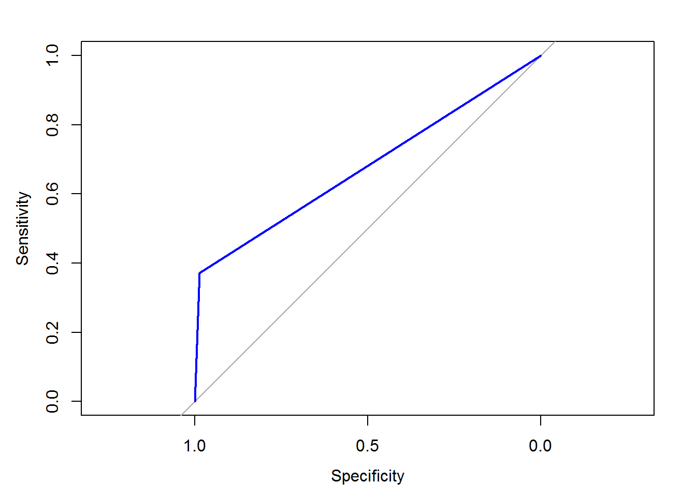
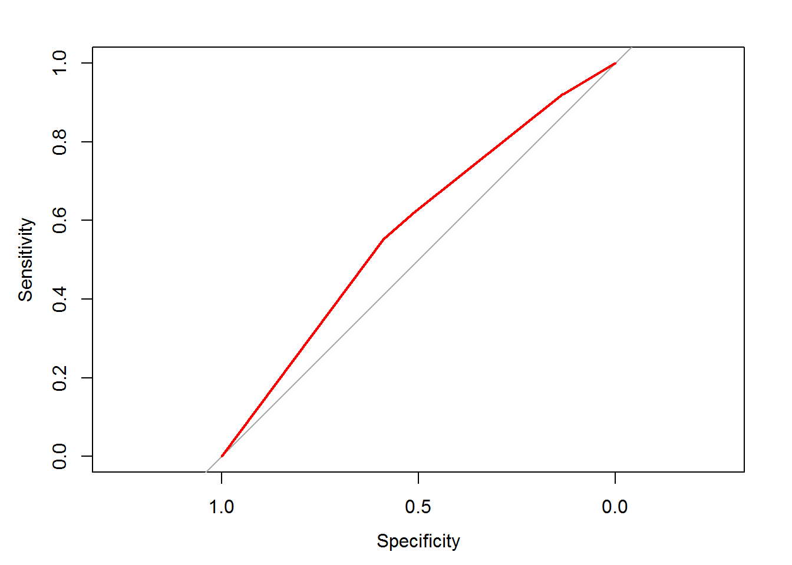
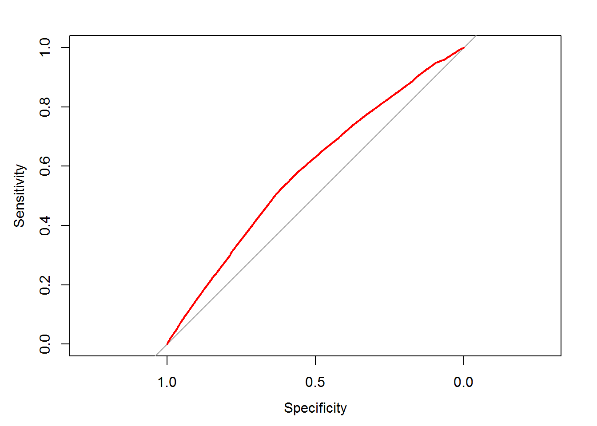

Capítulo 6 Regresión logistica binaria
Otro modelo de predicción de aprendizaje supervisado es el de regresión logística. Se trata de un tipo de análisis de regresión utilizado para predecir el resultado de una variable categórica (aquella que puede adoptar un número limitado de categorías) en función de las variables predictoras. Este modelo se enmarca dentro de los modelos denominados de predicción lineal generalizados o glm como son conocidos por sus siglas en inglés.
Con el adjetivo binario nos referimos a las predicciones sobre variables binarias o dicotómicas que simplemente tratan de decir si algo es 1 o 0, SI o NO.
Este modelo de pronóstico se usa mucho en variables que se distribuyen en forma de binomial. La binomial es una distribución de probabilidad discreta que cuenta el número de éxitos en una secuencia de n ensayos. Si el evento de éxito tiene una probabilidad de ocurrencia p, la probabilidad del evento contrario -el de fracaso- tendrá una probabilidad de \(q = 1 - p\). En la distribución binomial se repite el experimento de éxito -fracaso n veces, de forma independiente, y se trata de calcular la probabilidad de un determinado número de éxitos d, en esas n repeticiones \(B(n,p)\).
La denominación de logística se debe precisamente a la forma de la propia función de distribución de probabilidad binomial que presenta un crecimiento exponencial y que se parece a una \(S\) y que toma el nombre matemático de función logística \(\frac{1}{1+e^{-t}}\).
Esta curva, es una aproximación continua a la función discreta binaria, pues el cambio de 0 a 1 se produce en corto espacio y muy pronunciado. Si usáramos otras funciones como la lineal para la regresión de datos binarios funcionaría muy mal, pues el ajuste lineal no capta bien la forma de los datos, las dos agrupaciones que buscamos separar o clasificar.
Los modelos de regresión logísticos se generan con la función glm() del paquete base R stats, de la siguiente manera.
m <- glm(y ~ x1 + x2 + x3,
data = my_dataset,
family = "binomial")
prob <- predict(m, test_dataset, type = "response")
pred <- ifelse(prob > 0.50, 1, 0)Importante reseñar que la predicción se da en modo de probabilidad, por lo que para evaluar un pronóstico concreto, se debe establecer qué umbral es el que fija el pronostico 0 o 1. En el caso del ejemplo anterior se ha determinado que para pred>0,5 el pronostico es 1.
6.1 Construir modelos glm
Siguiendo con el uso de la base de datos de ejemplo de supervivientes del Titanic, vamos a crear un modelo logístico que pronostique la variable Survived. Podemos ver como se crearon los datos en el apartado de particiones de los datos
Al igual que todos los modelos de aprendizaje, el modelo se compone de una fórmula, y luego se pronostica con la función predict(). En los modelos glm(), los únicos argumentos de predict() son response y terms. El primer caso da directamente la probabilidad de la respuesta y el segundo argumento proporciona los coeficientes de cada término en la fórmula. Si solo queremos obtener un valor de predicción usaremos type = "response".
# Antes hemos cargado los datos del titanic
# echamos un vistazo a los datos
head(Titanic_data)## Class Sex Age Survived
## 3 3rd Male Child No
## 3.1 3rd Male Child No
## 3.2 3rd Male Child No
## 3.3 3rd Male Child No
## 3.4 3rd Male Child No
## 3.5 3rd Male Child No table(Titanic_data$Survived)##
## No Yes
## 1490 711# creamos una partición para crear un conjunto de test y otro de entrenamiento
library(caret)## Loading required package: lattice## Loading required package: ggplot2 set.seed(123)
# creamos un vector de particion sobre la variable Survived
# el tamaño de muestra será de 75%
trainIndex=createDataPartition(Titanic_data$Survived, p=0.70)$Resample1
# definimoslos dos conjuntos de muestra
d_titanic_train=Titanic_data[trainIndex, ] # conjunto entrenamiento
d_titanic_test= Titanic_data[-trainIndex, ] # conjunto de testUna vez tenemos los conjuntos de test y de aprendizaje creamos el modelo, usando la misma simbología que en el caso de los modelos de naive_bayes. La peculiaridad de glm() es que tenemos que identificar un umbral de probabilidad a partir del que consideramos el pronostico 0 o 1.
# Construimos el modelo de predicción con la función glm
m_glm <- glm(Survived ~ Class+Sex, data = d_titanic_train, family = "binomial")
# resumen del modelo
summary(m_glm) ##
## Call:
## glm(formula = Survived ~ Class + Sex, family = "binomial", data = d_titanic_train)
##
## Deviance Residuals:
## Min 1Q Median 3Q Max
## -2.1346 -0.7499 -0.4644 0.7435 2.1356
##
## Coefficients:
## Estimate Std. Error z value Pr(>|z|)
## (Intercept) -0.2856 0.1678 -1.702 0.0888 .
## Class2nd -1.0257 0.2352 -4.362 1.29e-05 ***
## Class3rd -1.8870 0.2093 -9.017 < 2e-16 ***
## ClassCrew -0.8394 0.1911 -4.393 1.12e-05 ***
## SexFemale 2.4557 0.1698 14.463 < 2e-16 ***
## ---
## Signif. codes: 0 '***' 0.001 '**' 0.01 '*' 0.05 '.' 0.1 ' ' 1
##
## (Dispersion parameter for binomial family taken to be 1)
##
## Null deviance: 1939.3 on 1540 degrees of freedom
## Residual deviance: 1560.7 on 1536 degrees of freedom
## AIC: 1570.7
##
## Number of Fisher Scoring iterations: 4 # vemos las predicciones en el conjunto de test
d_titanic_test$pred<-predict(m_glm, d_titanic_test, type= "response")
# Hacemos el resumen gráfico del resultado
hist(100*d_titanic_test$pred, col="skyblue",
main=" resultados modelo glm() sobre datos Titanic test",
xlab="Probabilidad en % de supervivencia",
ylab="Frecuencia")
# Marcamos un umbral en el que consideramos el pronostico como donación
# este umbral lo ponemos en un valor del 60%
abline(v= 60,col= "navy", lwd=3) # marcamos el umbral de supervivencia
d_titanic_test$pred_final_60 <- ifelse(d_titanic_test$pred > 0.6, 1, 0)
# resumen de resultados
table(d_titanic_test$pred_final_60)##
## 0 1
## 575 85 # podemos calcular el ajuste respecto a los casos reales con esta sencilla formula
# antes vamos a cambiar los levels de survived No=0, Yes=1
table(d_titanic_test$Survived) # vemos cual es el primero ---> No##
## No Yes
## 447 213 levels(d_titanic_test$Survived) <- c(0,1)
mean(d_titanic_test$pred_final_60 == d_titanic_test$Survived)## [1] 0.7878788Como vemos una vez realizado el pronostico podríamos probar diferentes umbrales y ver cual es el que da un mejor resultado con esta metodología.
6.2 curvas ROC y AUC
Estas curvas nos ayudan a controlar el acierto o no de los modelos cuando uno de los eventos es muy raro. Esto implica que predecir el evento opuesto conlleva un gran porcentaje de aciertos, y en cierta forma falsea la utilidad real de la predicción lo que hay que vigilar y entender.
En estos casos es mejor sacrificar los aciertos generales en favor de concentrarlos sobre uno de los resultados, el más raro, el que buscamos distinguir.
Por lo tanto la exactitud de la predicción general es una medida engañosa en el rendimiento de lo que realmente nos interesa. Este es un caso muy común en predicciones binomiales pues un caso, el de éxito puede tener una probabilidad general mucho menor que el de fracaso, y un porcentaje de acierto elevado, puede no tener importancia, pues lo que nos interesa no es acertar los fracasos sino los éxitos.
Las curvas ROC son buenas para evaluar este problema en conjuntos de datos desequilibrados.
Al hacer una gráfica ROC se representa mejor la compensación entre un modelo que es demasiado agresivo y uno que es demasiado pasivo. Lo que interesa es que el área de la curva sea máxima, cercana a 1, por lo que cuanto más se eleve respecto de la linea media mejor.
Estas gráficas se pintan con la libraría pROC. Usaremos dos funciones una para pintar la gráfica y otra que calcula el AUC o área bajo la curva.
# Cargamos la libraría de graficos ROC
library(pROC)## Type 'citation("pROC")' for a citation.##
## Attaching package: 'pROC'## The following objects are masked from 'package:stats':
##
## cov, smooth, var # Creamos una curva ROC basada en el modelo glm anterior
ROC_glm60 <- roc(d_titanic_test$Survived, d_titanic_test$pred_final_60)
# Pintamos la grafica ROC
plot(ROC_glm60, col = "blue")
#plot(ROC_naive, col = "red")
# Calculamos el area bajo la ROC(AUC)
auc(ROC_glm60)## Area under the curve: 0.6787 d_titanic_test$pred_final_40 <- ifelse(d_titanic_test$pred > 0.4, 1, 0)
ROC_glm40 <-roc(d_titanic_test$Survived, d_titanic_test$pred_final_40)
# Pintamos la grafica ROC
plot(ROC_glm40, col = "red")
auc(ROC_glm40)## Area under the curve: 0.7179Vistos los resultados, el seleccionar un umbral de 40, mejora la predicción de casos positivos de supervivencia.
6.3 Modelos de impacto combinado
En las formulaciones de modelos glm podemos expresar lo que se denominan impactos combinados o interacciones entre variables. Estos casos se dan cuando el efecto combinado de dos variables es muy importante y superior a la combinación lineal de ellas. Es decir el efecto es exponencial y no lineal sobre la variable a predecir.
6.3.1 Ejemplo
Uno de los mejores predictores de donaciones futuras es el historial de donaciones anteriores y cuanto mas recientes, frecuentes y grandes mejor. En términos de comercialización, esto se conoce como R/F/M (Recency Frequency Money).
Es muy probable que el impacto combinado de reciente y frecuencia puede ser mayor que la suma de los efectos por separado, si uno ha dado dinero a una ONG hace muy poco será poco probable que de otra vez enseguida.
Debido a que estos predictores juntos tienen un mayor impacto en la variable dependiente, su efecto conjunto debe modelarse como una interacción. Esto en la formulación del modelo se identifica por un * en lugar de un +.
# Leemos la tabla de datos
donors<-read.csv("donors.csv",header = TRUE)
head(donors)## donated veteran bad_address age has_children wealth_rating
## 1 0 0 0 60 0 0
## 2 0 0 0 46 1 3
## 3 0 0 0 NA 0 1
## 4 0 0 0 70 0 2
## 5 0 0 0 78 1 1
## 6 0 0 0 NA 0 0
## interest_veterans interest_religion pet_owner catalog_shopper recency
## 1 0 0 0 0 CURRENT
## 2 0 0 0 0 CURRENT
## 3 0 0 0 0 CURRENT
## 4 0 0 0 0 CURRENT
## 5 0 1 0 1 CURRENT
## 6 0 0 0 0 CURRENT
## frequency money
## 1 FREQUENT MEDIUM
## 2 FREQUENT HIGH
## 3 FREQUENT MEDIUM
## 4 FREQUENT MEDIUM
## 5 FREQUENT MEDIUM
## 6 INFREQUENT MEDIUM str(donors)## 'data.frame': 93462 obs. of 13 variables:
## $ donated : int 0 0 0 0 0 0 0 0 0 0 ...
## $ veteran : int 0 0 0 0 0 0 0 0 0 0 ...
## $ bad_address : int 0 0 0 0 0 0 0 0 0 0 ...
## $ age : int 60 46 NA 70 78 NA 38 NA NA 65 ...
## $ has_children : int 0 1 0 0 1 0 1 0 0 0 ...
## $ wealth_rating : int 0 3 1 2 1 0 2 3 1 0 ...
## $ interest_veterans: int 0 0 0 0 0 0 0 0 0 0 ...
## $ interest_religion: int 0 0 0 0 1 0 0 0 0 0 ...
## $ pet_owner : int 0 0 0 0 0 0 1 0 0 0 ...
## $ catalog_shopper : int 0 0 0 0 1 0 0 0 0 0 ...
## $ recency : Factor w/ 2 levels "CURRENT","LAPSED": 1 1 1 1 1 1 1 1 1 1 ...
## $ frequency : Factor w/ 2 levels "FREQUENT","INFREQUENT": 1 1 1 1 1 2 2 1 2 2 ...
## $ money : Factor w/ 2 levels "HIGH","MEDIUM": 2 1 2 2 2 2 2 2 2 2 ...# Construimos un modelo complejo
rfm_model <- glm(donated ~ money + recency* frequency ,data = donors,family = "binomial")
# Resumen del modelo RFM
summary(rfm_model)##
## Call:
## glm(formula = donated ~ money + recency * frequency, family = "binomial",
## data = donors)
##
## Deviance Residuals:
## Min 1Q Median 3Q Max
## -0.3696 -0.3696 -0.2895 -0.2895 2.7924
##
## Coefficients:
## Estimate Std. Error z value Pr(>|z|)
## (Intercept) -3.01142 0.04279 -70.375 <2e-16 ***
## moneyMEDIUM 0.36186 0.04300 8.415 <2e-16 ***
## recencyLAPSED -0.86677 0.41434 -2.092 0.0364 *
## frequencyINFREQUENT -0.50148 0.03107 -16.143 <2e-16 ***
## recencyLAPSED:frequencyINFREQUENT 1.01787 0.51713 1.968 0.0490 *
## ---
## Signif. codes: 0 '***' 0.001 '**' 0.01 '*' 0.05 '.' 0.1 ' ' 1
##
## (Dispersion parameter for binomial family taken to be 1)
##
## Null deviance: 37330 on 93461 degrees of freedom
## Residual deviance: 36938 on 93457 degrees of freedom
## AIC: 36948
##
## Number of Fisher Scoring iterations: 6 #summary(rfm_model)$coefficients
# Calculamos las predicciones del modelo RFM
rfm_prob <- predict(rfm_model, type = "response")
head(rfm_prob)## 1 2 3 4 5 6
## 0.06601640 0.04691282 0.06601640 0.06601640 0.06601640 0.04105058# Pintamos la curva ROC para ver el efecto del modelo y calculamos el area AUC
require(pROC)
ROC <- roc(donors$donated, rfm_prob)
plot(ROC, col = "red")
auc(ROC)## Area under the curve: 0.57856.4 Optimización de un modeloS glm
Cuando a priori no sabemos qué variables tienen más dependencia para crear el modelo una forma de hacerlo es usando la regresión gradual. Esto consiste en aplicar una función que va incrementando las variables y detecta el mejor modelo de regresión.
Para construirlo hacemos lo siguiente:
1 creamos un modelo glm() sin predictores. se hace estableciendo la variable explicativa igual a 1. 2 Se crea otro modelo con todos las variables usando ~ .. 3 Se aplica la función step() entre ambos modelos para realizar una regresión progresiva hacia adelante. Debe indicarse la dirección con direction = "forward" 4 Usamos la función predict() sobre la lista de modelos creados con step
Veamos el ejemplo:
# 1. Modelo sin predictores
null_model <- glm(donated ~1, data = donors, family = "binomial")
# 2. modelo completo
full_model <- glm(donated ~ ., data = donors, family = "binomial")
# 3. funcion step ()
step_model <- step(null_model, scope = list(lower = null_model, upper = full_model), direction = "forward")## Start: AIC=37332.13
## donated ~ 1## Warning in add1.glm(fit, scope$add, scale = scale, trace = trace, k = k, :
## using the 70916/93462 rows from a combined fit## Df Deviance AIC
## + frequency 1 28502 37122
## + money 1 28621 37241
## + wealth_rating 1 28705 37326
## + has_children 1 28705 37326
## + age 1 28707 37328
## + interest_veterans 1 28709 37330
## + catalog_shopper 1 28710 37330
## + pet_owner 1 28711 37331
## <none> 28714 37332
## + interest_religion 1 28712 37333
## + recency 1 28713 37333
## + bad_address 1 28714 37334
## + veteran 1 28714 37334
##
## Step: AIC=37024.77
## donated ~ frequency## Warning in add1.glm(fit, scope$add, scale = scale, trace = trace, k = k, :
## using the 70916/93462 rows from a combined fit## Df Deviance AIC
## + money 1 28441 36966
## + wealth_rating 1 28493 37018
## + has_children 1 28494 37019
## + interest_veterans 1 28498 37023
## + catalog_shopper 1 28499 37024
## + age 1 28499 37024
## + pet_owner 1 28499 37024
## <none> 28502 37025
## + interest_religion 1 28501 37026
## + recency 1 28501 37026
## + bad_address 1 28502 37026
## + veteran 1 28502 37027
##
## Step: AIC=36949.71
## donated ~ frequency + money## Warning in add1.glm(fit, scope$add, scale = scale, trace = trace, k = k, :
## using the 70916/93462 rows from a combined fit## Df Deviance AIC
## + wealth_rating 1 28431 36942
## + has_children 1 28432 36943
## + interest_veterans 1 28438 36948
## + catalog_shopper 1 28438 36949
## + age 1 28439 36949
## + pet_owner 1 28439 36949
## <none> 28441 36950
## + interest_religion 1 28440 36951
## + recency 1 28441 36951
## + bad_address 1 28441 36951
## + veteran 1 28441 36952
##
## Step: AIC=36945.26
## donated ~ frequency + money + wealth_rating## Warning in add1.glm(fit, scope$add, scale = scale, trace = trace, k = k, :
## using the 70916/93462 rows from a combined fit## Df Deviance AIC
## + has_children 1 28421 36937
## + interest_veterans 1 28429 36945
## + catalog_shopper 1 28429 36945
## + age 1 28429 36945
## <none> 28431 36945
## + pet_owner 1 28430 36945
## + interest_religion 1 28431 36947
## + recency 1 28431 36947
## + bad_address 1 28431 36947
## + veteran 1 28431 36947
##
## Step: AIC=36938.08
## donated ~ frequency + money + wealth_rating + has_children## Warning in add1.glm(fit, scope$add, scale = scale, trace = trace, k = k, :
## using the 70916/93462 rows from a combined fit## Df Deviance AIC
## + pet_owner 1 28418 36937
## + catalog_shopper 1 28418 36937
## + interest_veterans 1 28418 36937
## <none> 28421 36938
## + interest_religion 1 28420 36939
## + recency 1 28421 36940
## + age 1 28421 36940
## + bad_address 1 28421 36940
## + veteran 1 28421 36940
##
## Step: AIC=36932.08
## donated ~ frequency + money + wealth_rating + has_children +
## pet_owner## Warning in add1.glm(fit, scope$add, scale = scale, trace = trace, k = k, :
## using the 70916/93462 rows from a combined fit## Df Deviance AIC
## <none> 28418 36932
## + interest_veterans 1 28416 36932
## + catalog_shopper 1 28416 36932
## + age 1 28417 36933
## + recency 1 28417 36934
## + interest_religion 1 28417 36934
## + bad_address 1 28418 36934
## + veteran 1 28418 36934 summary(step_model)##
## Call:
## glm(formula = donated ~ frequency + money + wealth_rating + has_children +
## pet_owner, family = "binomial", data = donors)
##
## Deviance Residuals:
## Min 1Q Median 3Q Max
## -0.4023 -0.3625 -0.2988 -0.2847 2.7328
##
## Coefficients:
## Estimate Std. Error z value Pr(>|z|)
## (Intercept) -3.05529 0.04556 -67.058 < 2e-16 ***
## frequencyINFREQUENT -0.49649 0.03100 -16.017 < 2e-16 ***
## moneyMEDIUM 0.36594 0.04301 8.508 < 2e-16 ***
## wealth_rating 0.03294 0.01238 2.660 0.007805 **
## has_children -0.15820 0.04707 -3.361 0.000777 ***
## pet_owner 0.11712 0.04096 2.860 0.004243 **
## ---
## Signif. codes: 0 '***' 0.001 '**' 0.01 '*' 0.05 '.' 0.1 ' ' 1
##
## (Dispersion parameter for binomial family taken to be 1)
##
## Null deviance: 37330 on 93461 degrees of freedom
## Residual deviance: 36920 on 93456 degrees of freedom
## AIC: 36932
##
## Number of Fisher Scoring iterations: 6 # estimamos la probabilidad
step_prob <- predict(step_model, type = "response")
# Pintamos ROC of the stepwise model
library(pROC)
ROC <- roc(donors$donated, step_prob)
plot(ROC, col = "red")
auc(ROC)## Area under the curve: 0.5855